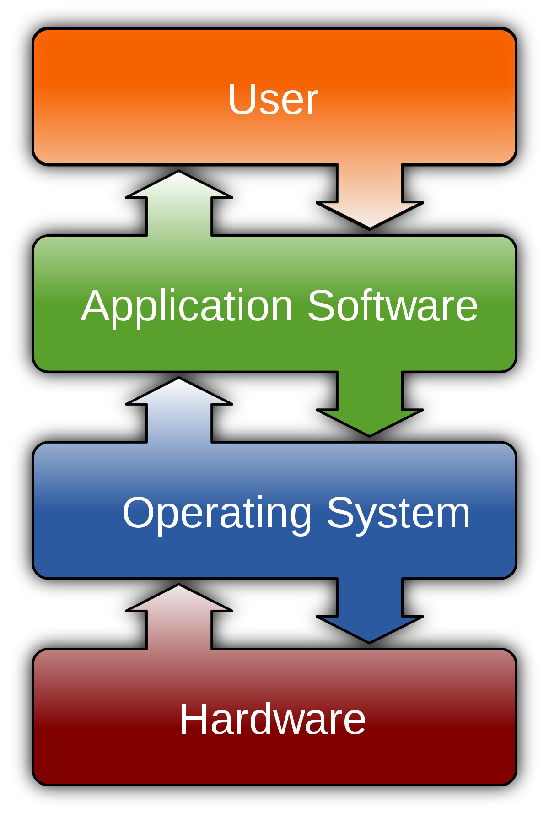

Érettségi tétel kidolgozása
A szoftverek
Bármilyen jó hardver álljon is rendelkezésünkre, megfelelő szoftverek hiányában gépünk használhatatlan. A szoftvereket funkciójuk szerint három fő csoportba soroljuk.
A rendszerszoftverek: a rendszerszoftver, más néven operációs rendszer felelős a számítógép alapvető működtetéséért. Az operációs rendszer feladatai közé tartozik a hardver és a felhasználó közötti kapcsolat megteremtése, a háttértárakhoz kapcsolódó adatkezelő műveletek biztosítása és a perifériák kezelése. A mai modernoperációs rendszerek a felsoroltaknál lényegesen több szolgáltatást nyújtanak.
A személyi számítógépeken korábban a DOS-t, napjainkban pedig a Microsoft Windows operációs rendszereket használják a legszélesebb körben. A Windows első változata –pl: Windows 3.1- még nem voltak önálló operációs rendszerek, működésük a DOS-on alapult. A Windows program a 95 és az NT megjelenésével vált önálló operációs rendszerré.
A Microsoft Windows a DOS-sal ellentétben már grafikus felhasználói felülettel (GUI – Graphical User Interface) rendelkezik. A GUI olyan felhasználói felület, ahol a számítógép vezérlésére parancsok helyett ikonokat, ablakokat és rajzos elemeket használnak. Használata egyszerűbb, gyorsabb, mert a parancsok begépelése helyett egérrel vagy más pozicionáló eszközzel rámutatással adhatjuk ki a parancsokat, egyes fájl kezelő műveleteket – pl: másolás, áthelyezés – pedig az úgynevezett Fogd és vidd módszerrel egyetlen mozdulattal hajthatjuk végre.
A piacon azonban más nagynevű cégek is jelen vannak saját operációs rendszereikkel. Ilyen pl: az IBM cég OS/2 rendszere, a Bell Labs által kifejlesztett UNIX egyes változatai, a nyílt fejlesztésű Linux, valamint a Macintosh gépeken működő Mac OS.
A rendszerközeli szoftver: A rendszerközeli szoftverek az operációs rendszer működéséhez nem elengedhetetlenül szükséges, de megkönnyíti azok használatát és jelentősen növelik a rendszer biztonságát. A rendszerközeli szoftvereknek alapvetően két csoportját különböztetjük meg.
Az egyik csoportot a segédprogramok (utility) alkotják. Ide tartoznak a víruskereső és –író programok, valamint a különféle tömörítő- és fájlkezelő programok. Az ilyen típusú szoftverek fejlesztője Peter Norton. Az ő nevéhez fűződik többek között a Norton Commander, a Norton Utilites termékek kifejlesztése, melyeket napjainkban a Symatech Coropation fejleszt tovább. Itt kell megemlíteni a merevlemez karbantartására szolgáló Pctools nevű programot is. Az új operációs rendszerek a rendszerközeli szoftverek egyre több funkcióját veszik át.
Másik csoportját a fejlesztői szoftverek alkotják. Ide soroljuk a különféle programnyelvek (Pascal, C, C++, Java, Delphi) fordítóprogramjait és fejlesztői környezetét.
A felhasználói szoftver: Felhasználói szoftvernek nevezzük azokat a programokat, melyek egy meghatározott felhasználói igényt elégítenek ki. Megkülönböztetünk általános célú és egyedi célú felhasználói szoftvereket. Az általános célú szoftverek csoportjába sorolhatjuk a játékprogramokat, szövegszerkesztőket, a nyilvántartó- és grafikai programokat. Összességében a szoftveripar legnagyobb üzletága a felhasználói szoftverek fejlesztése. A világon programozók ezrei foglalkoznak mindenféle felhasználói szoftver készítésével, illetve azok tovább fejlesztésével. Az egyedi célú felhasználói szoftverek csoportjába a speciális igényeket kielégítő, konkrét cél érdekében készülő, általános célra nem alkalmazható programok tartoznak.
A szoftverek verziói: a szoftverek fejlesztése nagyon gyors ütemben zajlik, egy éven belül egy programnak akár több új változata is megjelenhet. Szükség van tehát a szoftverek különféle verzióinak megkülönböztetésére. Ha minden változatnak új nevet adnának, lehetetlen volna eldönteni, melyik programnak melyik az elődje, ezért az egyes változatok megkülönböztetésére úgynevezett verziószámokat használnak. Általában a programok első publikus változata az 1.0 verziószámot kapja, majd a különféle továbbfejlesztésektől függően kaphat új verziószámot, pl: 1.1; 1.5; 2.0 stb. Ezeket a verziószámokat azonban a programozók teljesen szubjektív módon adják termékeiknek, a sorszámozásra nincsen általánosan elfogadott szabály. Ha a szoftveren nagyobb fejlesztéseket hajtanak végre, akkor azt általában a verziószám egész számjeggyel történő megváltoztatásával jelzik. Amennyiben kisebb fejlesztéseket vagy javításokat végeznek egy szoftveren, a verziószámok nem egész számjeggyel változnak. Egyes esetekben a nem egész számjegyű tagokból több is szerepel a verziószámban.
Például a Photoshop grafikai program fejlesztése során a következő verziószámokkal is ellátták:5.0; 5.5; 6.0; 6.0.1.
A Microsoft 1995-től kezdődően a programok egyes verzióinak évszámokkal történő megkülönböztetését. Például a Microsoft Office irodai programcsomag újabb verziói a 95, 97 és a 2000 elnevezéseket kapták, a legújabb neve azonban Office XP. Ezt a jelölési formát később más szoftverfejlesztő cégek is átvették.
A szoftverek telepítése
A programok többségét ma már többnyire nem elegendő egy általunk szimpatikusnak ítélt könyvtárba bemásolni, hanem általában telepíteni (installálni) szükséges. A telepítés többnyire nem túl összetett feladat (leggyakrabban az első lemezen vagy CD-n lévő SETUP vagy INSTALL programot kell indítani.). Néha a telepített szoftveren használat közben is változtatni kell egy esetleges konfigurációváltozás miatt (pl. új hangkártya, nyomtató használatba vétele). A Windows alatti szoftverek esetében többnyire elegendő a Windows-ban megtenni a kívánt változtatásokat. Sajnos a telepített programokat törölni sem olyan egyszerű. Amennyiben az adott szoftverhez van úgynevezett uninstall program, úgy ezzel megtehetjük, de a telepített programokat nyom nélkül eltüntetni még úgy sem tudunk, hogy kitöröljük a merevlemezről a program állományait, könyvtárait.

A szoftverek csoportosítása
- Rendszer szoftverek
- iFejlesztői szoftverek (programnyelvek fejlesztői szoftverkörnyezetei),
- Alkalmazói (felhasználói) szoftverek (irodai, mérnöki, játék, multimédia stb. alkalmazások).
A felhasználói szoftver valamilyen konkrét feladat megoldására kifejlesztett szoftver.
A rendszer és a felhasználói szoftverek együttesen szükségesek a számítógép használatához, ezért egyidejűleg vannak jelen a számítógépben. Az egyidejű futás látszólagos, mert (ha egy központi egység van a számítógépben) egy adott pillanatban csak egy szoftver futhat. A számítógép olyan gyorsan váltogathat a különböző szoftverek futása között, hogy az a felhasználó számára egyidejűnek tűnik.
Operációs rendszerek
A legelső, hogy a számítógépünk alap-működtető programjáról gondoskodjunk, ezért fontos, hogy gépünkön legyen egy operációs rendszer. Ez legalább egy Windows 95, de inkább Millennium, esetleg 98, 2000, vagy XP legyen. Amennyiben nagyon régi, kisteljesítményű gépünk van, úgy be kell érnünk a DOS parancsnyelvű lehetőségeivel, de a számítógépek képességeinek bővülésével együtt a programok lehetőségei is tágultak. A Windows-t egyre szélesebb körben alkalmazzák, s ma már a programok többsége csak Windows alatt képes működni. A DOS ezen alkalmazások nagymértékű elterjedése miatt mindinkább háttérbe szorul.
Feladata:
- a hardver és a felhasználó közötti kapcsolat megteremtése
- a háttértárakhoz kapcsolódó adatkezelő műveletek biztosítása
- a perifériák kezelése
Segédprogramok
Amennyiben a DOS használatát körülményesnek találjuk, ám lehetőségeit mégis szeretnénk kihasználni, célszerű beszerezni olyan segédprogramokat, amelyek az állományok menedzselését, a lemezek és alkönyvtárak használatát teszik kényelmesebbé. Ilyen program például a Norton Commander, ami az újabb DOS rendszereknek része. Természetesen hasonló segédprogramok léteznek Windows alá, is, de ott az egyszerűbb kezelhetőség miatt nincs rájuk akkora szükség.
- az operációs rendszer működésé hez nem feltétlenül szükséges
- de annak használatát megkönnyíti
- a rendszer biztonságát jelentős mértékben megnöveli (vírusirtók, tömörítők, lemezkarbantartók)
Felhasználói programok
Szöveg és kiadványszerkesztőkA számítógép komolyabb használata során óhatatlanul találkozunk olyan problémával, amikor valamilyen szövegszerkesztési feladatot kell megoldanunk. Ilyen esetekre felkészülve, mindenképp javasolt a merevlemezen szövegszerkesztő programot is tárolni, amelynek lehetőségei igazodnak feladatunk összetettségéhez. A számítógépes szövegszerkesztő programok területén igen bő kínálattal találkozunk. A mai szövegszerkesztők egy része már képes olyan igen komoly lehetőségek megvalósítására is, mint például a megfelelő elválasztás, vagy akár a helyesírás ellenőrzés. Előszeretettel elsősorban a Windows alatt futó komolyabb szövegszerkesztők ajánlhatók. Ilyen például a Word különböző verziói.(pl.6,7,97,2000,XP)
Amennyiben a szövegszerkesztő programok nem adnak kellő minőséget, használhatunk kiadványszerkesztő programot, melyek közül elterjedt a QuarkXPress és a PageMaker is.
Adatbázis – és táblázatkezelőkA számítógépek másik leggyakoribb alkalmazási területe az adatbázis kezelés, mivel a megoldani kívánt problémáink nagy része nagyobb mennyiségű adat feldolgozását, illetve ezen adatok nyilvántartását, módosítását, csoportosítását igényli. Az ilyen adatállományok használatakor adatbázis-kezelő programra van szükségünk. Az adatbázis-kezelő programok nagy része ugyan egyedileg, konkrét alkalmazásra készült, de léteznek olyan szoftverek is, amelyek segítségével magunk hozhatjuk létre adatbázisunk struktúráját, illetve annak kezelésének lehetőségét. Ezen programok használata sokszor már bizonyos programozói ismereteket is igényel. Ha ennek ellenére mégis belefogunk adatbázisunk és annak kezelőprogramjának létrehozásába, akkor használhatjuk az Access, a dBase, a Clipper programokat. Az adatbázisok nagy része speciálisan, táblázat formájában is definiálható. Ilyen módon elsősorban a pénzügyi, gazdasági táblázatok dolgozhatók fel, de a tervezeteket, statisztikákat is táblázatba foglalhatjuk. A táblázatok számítógépes feldolgozását több program is támogatja, amelyek közül a Windows alatt az Excel, a legelterjedtebb. Segítségével ugyanis nem csupán létrehozhatjuk és módosíthatjuk táblázatunkat, hanem grafikonokat, diagramokat is készíthetünk.
Grafikai programokA számítógépek alkalmazási területei között előkelő helyet foglalnak el a rajzolóprogramok, amelyek közül néhány még animációk készítésére is képes. Ezen programok közé tartozik a Paint, A PhotoSyler vagy az Adobe Photoshop, melyek bittérképes grafikát támogató, kényelmesen használható, sokfunkciós rajzprogramok. Más kategóriát képviselnek a vektorgrafikus, igen sok lehetőséget támogató, magas színvonalú ábrák készítésére szolgáló szoftverek, mint például a CorelDraw, amely Windows alatt fut, s profi felhasználóknak ajánlott.
Prezentáció-készítő programokMivel a számítástechnikai eszközök bevetésével jelentősen megemelhetjük előadásaink, bemutatóink színvonalát, célszerű az ilyen feladatokra szánt programok alkalmazása is, mely programok közül elsősorban a PowerPoint méltó említésre.
Oktatásban használható szoftverekA számítógépek alkalmazásának az oktatásban is nagy jövője van, hiszen az oktató programokon kívül, a számítógéppel előállított grafikák és animációk is hasznos kiegészítői lehetnek az előadásoknak. Egyre szélesebb körben alkalmazzák a nyelvoktatásban hasznos kiejtést bemutató és esetleg analizáló programokat ugyanúgy, mint a szinte minden tárgyban jól használható különböző tesztprogramokat.
JátékokA számítógépekre készült programok legnagyobb része játék. Ezek közül az elterjedt, és csupán az idő elütésére szolgáló, hatalmas mennyiségű program között szinte már mindenki találkozott valamelyikkel, hiszen a modern szórakozás egyik legtipikusabb példája a számítógépes játékprogram. Itt szinte bárki talál a saját ízlésének és igényének megfelelőt. A játékprogramok legtöbbje valamilyen kártya vagy akciójáték, amelyek sokszor tapasztalatot és jó reflexeket igényelnek, de tetemes mennyiségben akad olyan logikai játék is, mint például az amőba vagy a sakk.